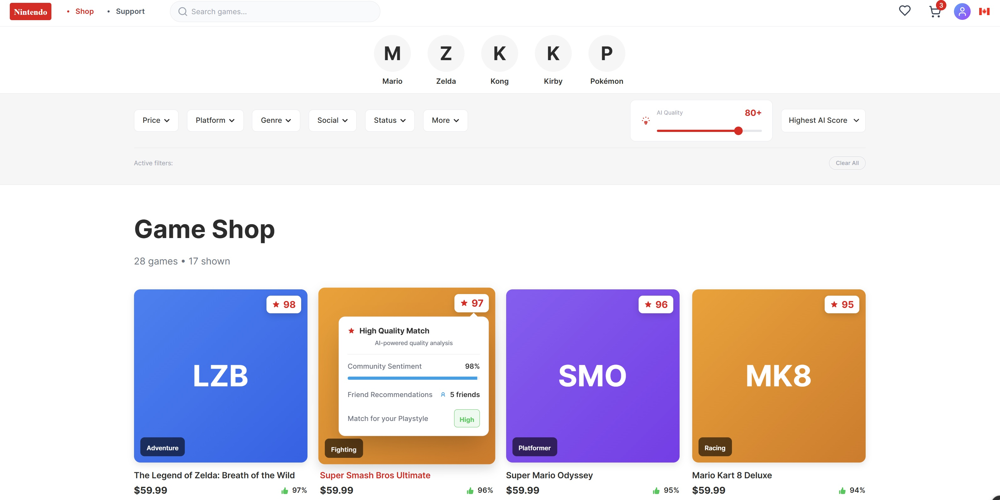
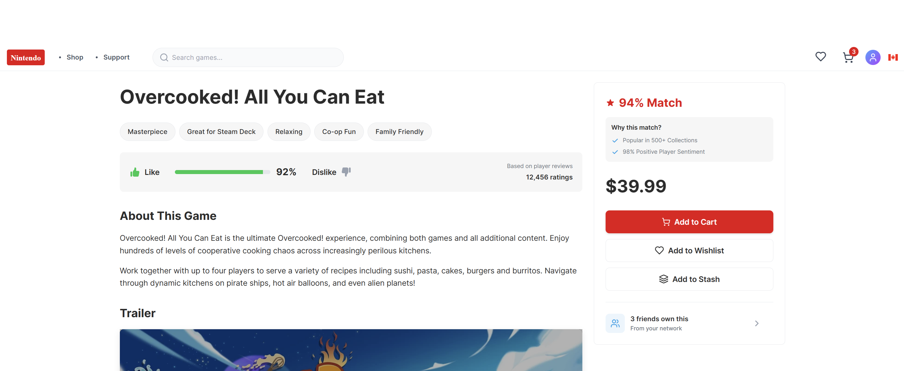
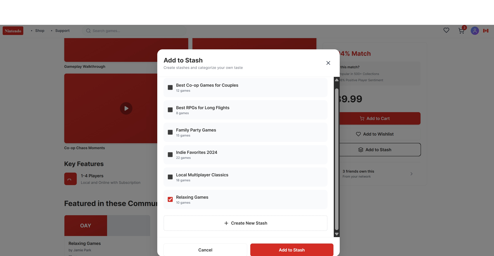

Revenue Investigation & Storefront Discovery Architecture
| ◼ Projects ☷ Resume ✉ Contact |
Executive Overview
The Nintendo eShop operates as a flat checkout counter rather than an active discovery hub, causing profound browsing fatigue and burying high-margin independent software titles. To plug this storefront conversion leak and capture missed platform revenue, this product transformation introduces a closed-loop Social-to-AI Metadata Flywheel driven by three core pillars: AI-Powered Search, Social Stashes, and Cross-Platform Responsiveness. By looping community-driven curation with backend machine learning, the platform eliminates off-platform user drop-off, structurally extends game lifecycles, and aggressively scales digital transaction velocity.
The current Nintendo eShop creates a severe expectation gap by treating game acquisition as a rigid, text-based transaction. This design failure introduces immense user friction and results in a major financial catalog bottleneck.
Lacking native, dynamic discovery mechanics, users experience immediate browsing fatigue and high search abandonment rates. Players routinely close the eShop to seek game curation and recommendations on external third-party networks (such as YouTube, Twitch, and Reddit). When a user abandons native store browsing to seek external advice, the direct purchase funnel is broken—introducing a massive drop-off leak where hot purchase intent evaporates before they ever return to the console.
This behavioral drop-off directly chokes Nintendo's long-tail digital monetization. Nintendo extracts a highly lucrative 30% digital platform cut on third-party and independent software sales. Because digital assets require zero physical manufacturing, shipping, or inventory distribution overhead, they yield maximum profit margins. This product transformation directly targets this catalog bottleneck, capturing and retaining traffic natively on-device to transform passive drop-off into high-margin platform profit.
To justify development overhead, the problem space is cross-referenced with public console ecosystem benchmarks, digital storefront metrics, and primary qualitative research data:
To anchor quantitative data with human proof, primary qualitative research was conducted via 1-on-1 user interviews with active Nintendo Switch players, revealing deep friction trends across three core behavioral categories:
To bridge the systemic drop-off loop, the target storefront framework maps user behaviors across three core, sequential ecosystem steps:
The gateway layer where users interface with the native AI-Powered Search Hub and the algorithmic AI Quality Score Search. High-margin indie properties are cleanly elevated out of the traditional catalog bottleneck based on active behavioral metrics, capturing high purchase intent right at the start of a user session.

The social proof layer that resolves browsing fatigue and drop-off. Instead of isolating the user, the storefront surfaces trust vectors: displaying friends who have played or liked the game, social approval ratings, and deep full-text community reviews natively embedded directly on the product detail page.

The final retention loop. Users save, group, and track their personalized lists or validated games natively via the "Stashes" framework. These user-curated vaults generate rich, context-specific metadata tags that feed back into the AI to train future discovery cycles, completing the operational flywheel.

The storefront architecture transitions away from flat keyword matching by implementing a machine learning model driven by localized metadata loops. At the center of this engine is an AI Quality Score Search that evaluates titles using backend behavioral metrics—such as active player retention, completion rates, and historical review data. By prioritizing quality data strings over volume velocity, the search hub filters out low-overhead asset flips and automatically surfaces high-margin, long-tail indie titles at the top of user query results.
The frontend interface replaces rigid categorical listings with Stashes—dynamic, user-curated vaults where the player community groups, tags, and tracks niche micro-genres (e.g., *"Cozy Deckbuilders for Rainy Days"*). This builds a closed-loop flywheel where social features directly feed the AI: the community crowdsources deep, contextual, and emotional metadata tags, solving the AI’s "cold-start problem" for new or obscure titles. Conversely, the AI processes these user data loops to dynamically suggest tailored indie titles straight back into active community vaults, keeping users natively engaged on-platform.
To eliminate friction between devices, the storefront experience is built with complete cross-platform responsiveness. The user journey scales seamlessly across form factors—adapting fluidly from the native console screen to mobile or web-based companion browsers. This responsive layer ensures that players can discover, save, and curate Stashes on any device while away from their console, protecting hot purchase intent and maintaining a unified, high-performance interface across all screens.
To launch this architecture safely without impacting live platform conversions, rollout milestones are split into distinct deployment phases matched directly with proactive data-triage controls:
Deploy localized ingestion tags, initialize backend AI Quality Score search matrices, and verify structural internal data loop connections under zero-traffic conditions.
Deploy peer validation networks (friends who played/liked), dynamic user Stashes, and activate fully responsive web and mobile browser viewport scaling.
Unlock full-text community review modules natively on the product details pages, closing the feedback loop between public sentiment and algorithmic weight updates.
Execute continuous database queries optimization, monitor conversion velocity, and fine-tune AI Quality Score search parameters based on live transaction values.
The product transformation turns engagement directly into revenue through a three-pronged monetization strategy that respects the player base while heavily incentivizing developers: